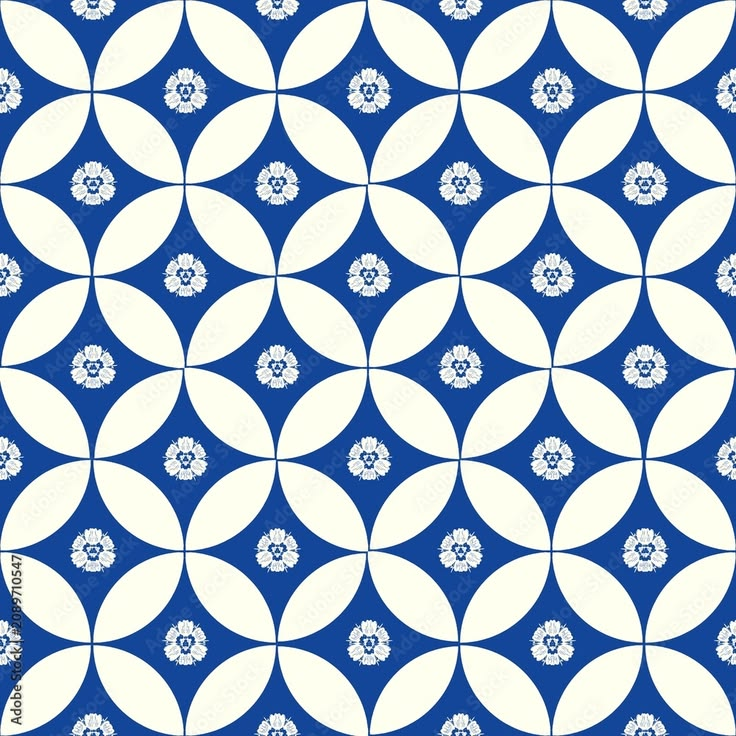
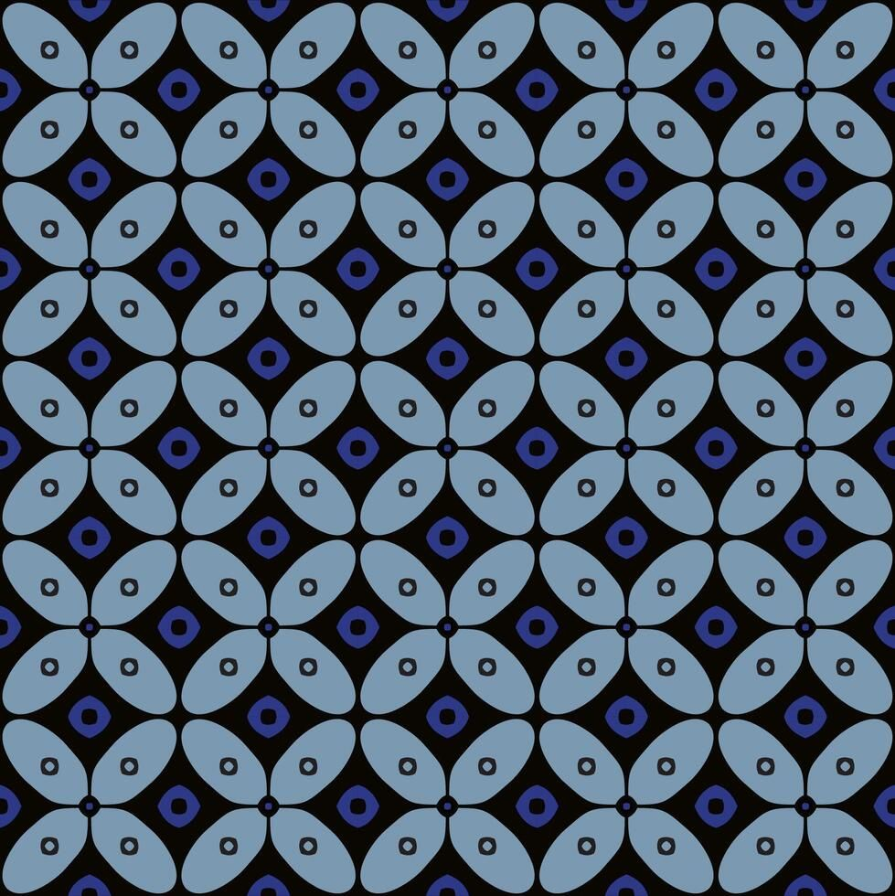
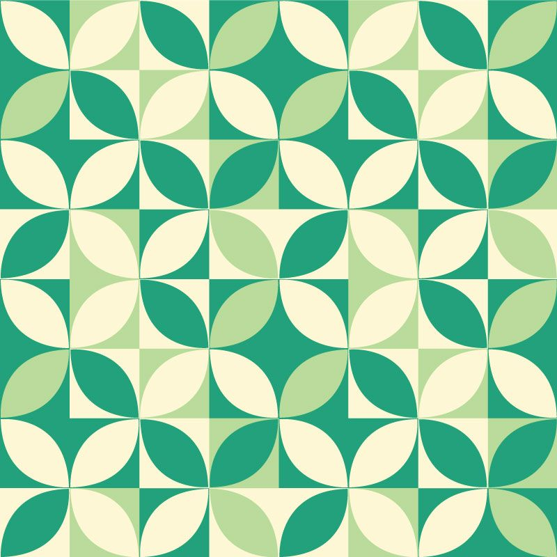
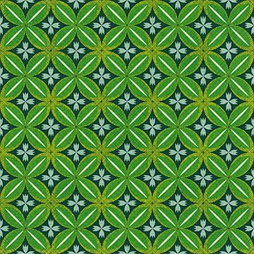
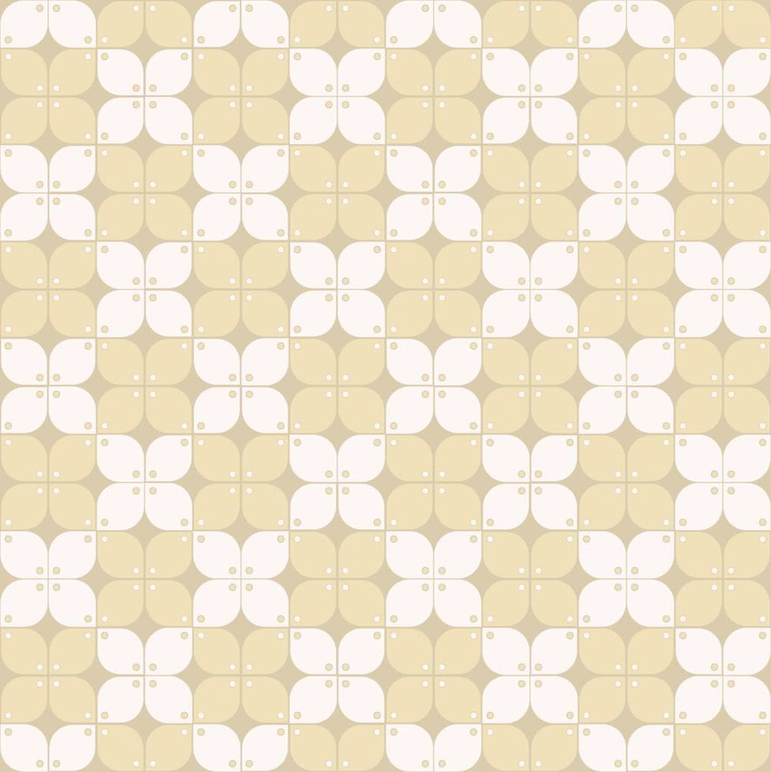
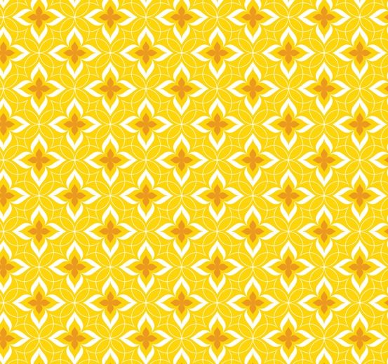
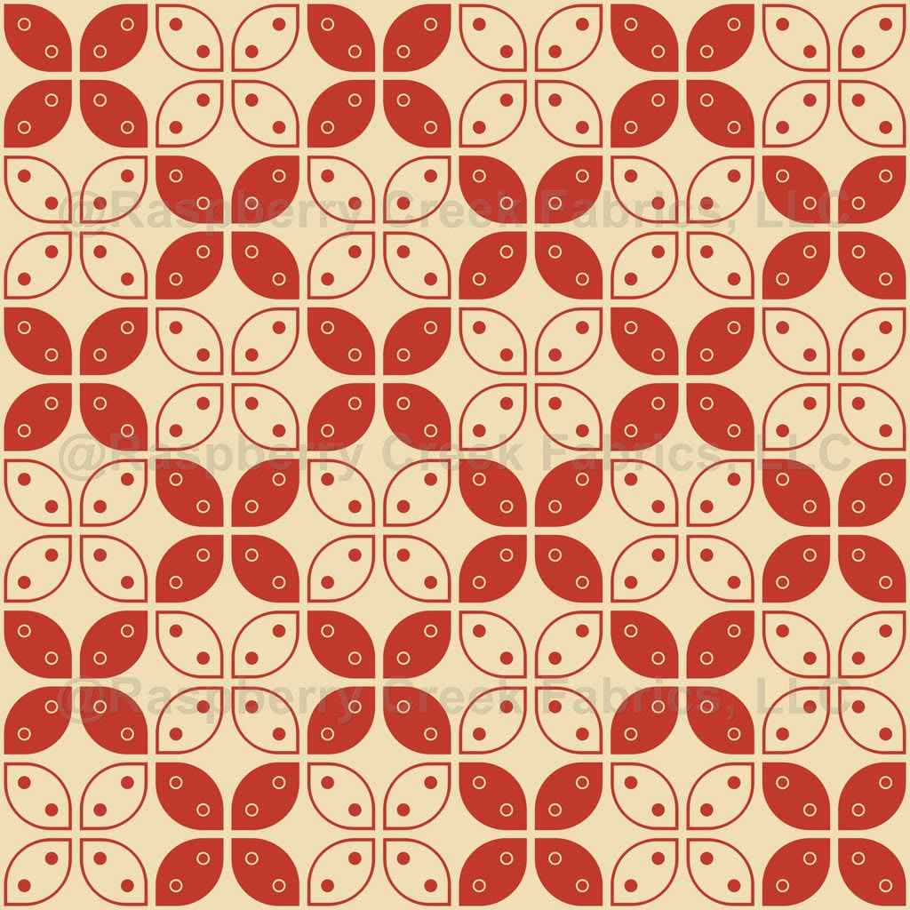
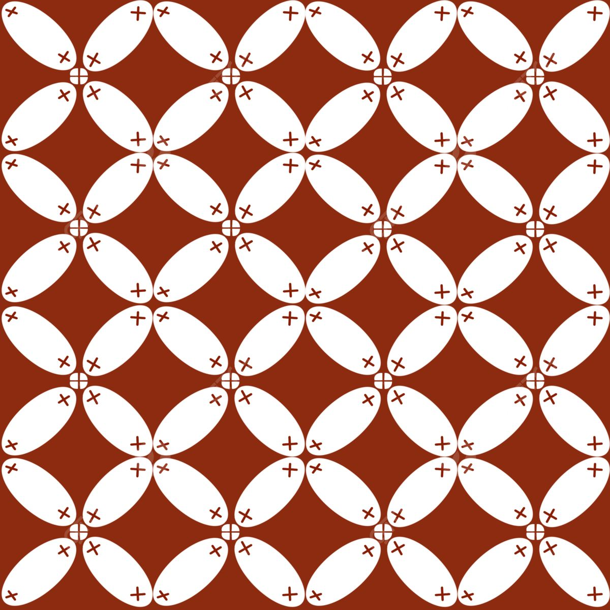
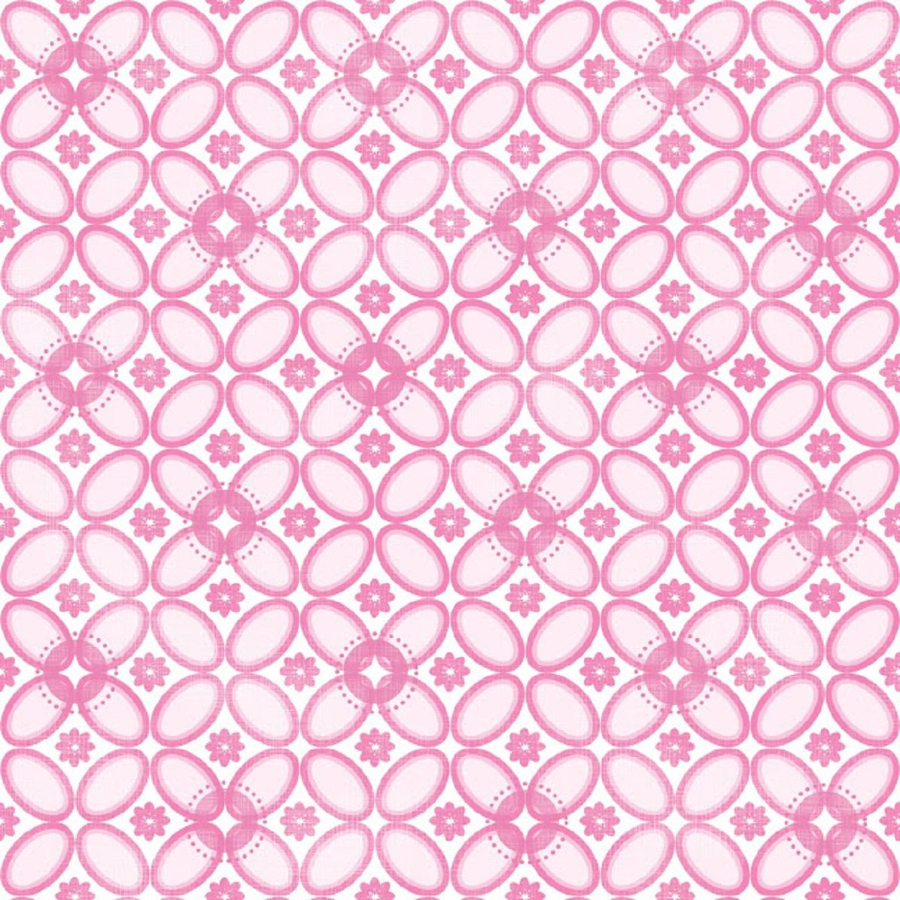

⡞⠳⣄⣀⣠⠞⢷ ֹ۪
Batik Kawung adalah salah satu motif batik tertua di Jawa yang berasal dari Yogyakarta dan Surakarta, dengan pola geometris berbentuk bulatan atau elips mirip buah kawung (aren/kolang-kaling) yang ditata rapi.
-ˋˏ✄┈┈┈┈┈┈┈┈┈┈┈┈┈┈┈┈┈┈┈┈┈
Motif batik kawung memiliki makna filosofis yang mendalam. Pola bulatan atau elips pada motif ini melambangkan kesucian, keabadian, dan keseimbangan dalam kehidupan. Selain itu, motif ini juga dianggap sebagai simbol kekuatan dan keberanian.
-ˋˏ✄┈┈┈┈┈┈┈┈┈┈┈┈┈┈┈┈┈┈┈┈┈
Batik kawung juga memiliki nilai historis yang tinggi. Motif ini telah digunakan sejak zaman kerajaan di Jawa dan menjadi salah satu warisan budaya yang dilestarikan hingga saat ini. Batik kawung sering digunakan dalam upacara adat, pernikahan, dan acara resmi lainnya.
-ˋˏ✄┈┈┈┈┈┈┈┈┈┈┈┈┈┈┈┈┈┈┈┈┈
Saat ini, batik kawung tidak hanya digunakan dalam pakaian tradisional, tetapi juga diaplikasikan pada berbagai produk fashion modern, seperti tas, sepatu, dan aksesori. Hal ini menunjukkan bahwa batik kawung tetap relevan dan diminati oleh generasi muda.
-ˋˏ✄┈┈┈┈┈┈┈┈┈┈┈┈┈┈┈┈┈┈┈┈┈
Dengan keindahan motifnya yang khas dan makna filosofis yang mendalam, batik kawung tetap menjadi salah satu simbol kebanggaan budaya Indonesia yang patut dilestarikan dan diapresiasi oleh masyarakat luas.
Batik Kawung adalah salah satu motif batik tertua dan paling klasik di Indonesia, yang sejarah dan maknanya berakar kuat pada tradisi keraton Jawa. Nama "kawung" berasal dari bahasa Jawa yang merujuk pada buah kolang-kaling atau penampang buah aren, karena bentuk motifnya yang berupa lingkaran-lingkaran teratur menyerupai irisan buah tersebut.
· · ─ ·ʚɞ· ─ · ·· · ─ ·ʚɞ· ─ · ·· · ─ ·ʚɞ· ─ · ·
Motif ini diperkirakan lahir pada zaman Kerajaan Mataram Islam sekitar abad ke-16 hingga ke-17, dan menjadi salah satu batik larangan yang hanya boleh dikenakan oleh keluarga kerajaan serta para bangsawan. Larangan ini mencerminkan tatanan sosial yang ketat, di mana rakyat biasa tidak diizinkan memakai kain bermotif Kawung. Seiring berjalannya waktu, aturan tersebut mulai longgar sehingga motif ini kini dapat dikenakan secara luas oleh masyarakat umum. Pada 2009, batik Indonesia termasuk Kawung diakui UNESCO sebagai Warisan Budaya Takbenda, dan motifnya kerap dipakai pada seragam maupun identitas visual berbagai instansi.
· · ─ ·ʚɞ· ─ · ·· · ─ ·ʚɞ· ─ · ·· · ─ ·ʚɞ· ─ · ·
Secara filosofis, bentuk lingkaran yang simetris melambangkan keteraturan, kesempurnaan, dan keharmonisan hidup, sekaligus mengingatkan manusia untuk mengendalikan hawa nafsu dan menjaga keseimbangan batin. Empat kelopak yang tersusun rapi juga dimaknai sebagai empat arah mata angin yang menuntun pemakainya menuju kebijaksanaan dan kesederhanaan. Dengan demikian, Kawung bukan sekadar hiasan, melainkan cerminan nilai luhur yang diwariskan dari generasi ke generasi.

Batik Kawung dapat digunakan generasi muda sebagai identitas yang bangga akan budaya, misalnya pada seragam sekolah, pakaian kasual, atau aksesori. Dengan mengenakannya, mereka melestarikan warisan leluhur sekaligus menampilkan nilai kesederhanaan dan keteraturan dalam gaya hidup modern yang tetap relevan.